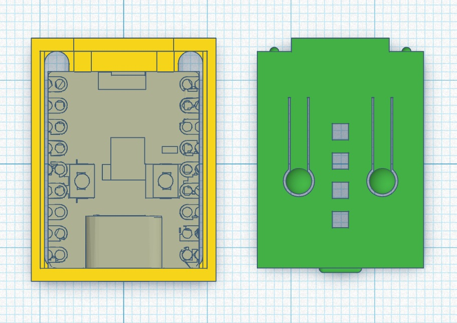
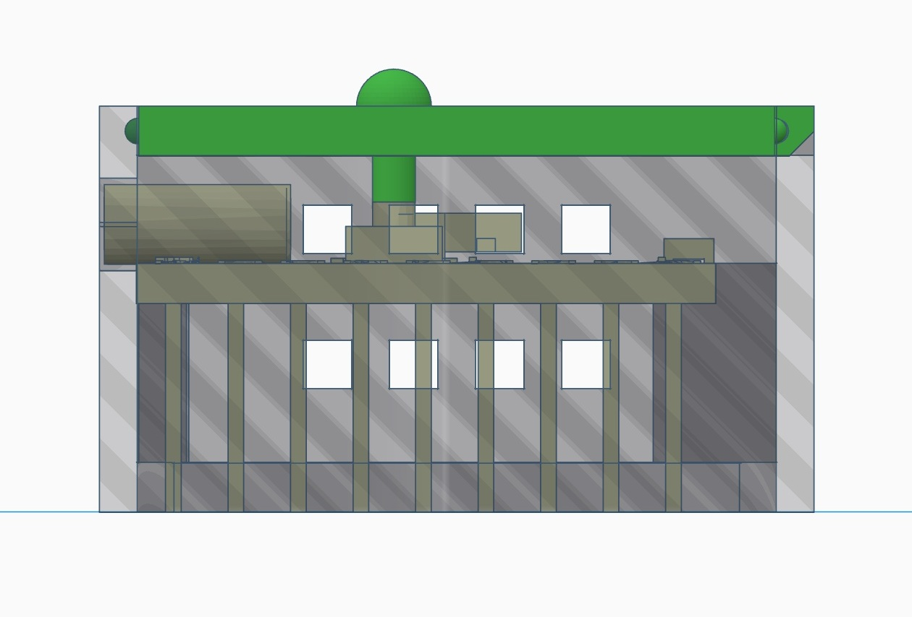
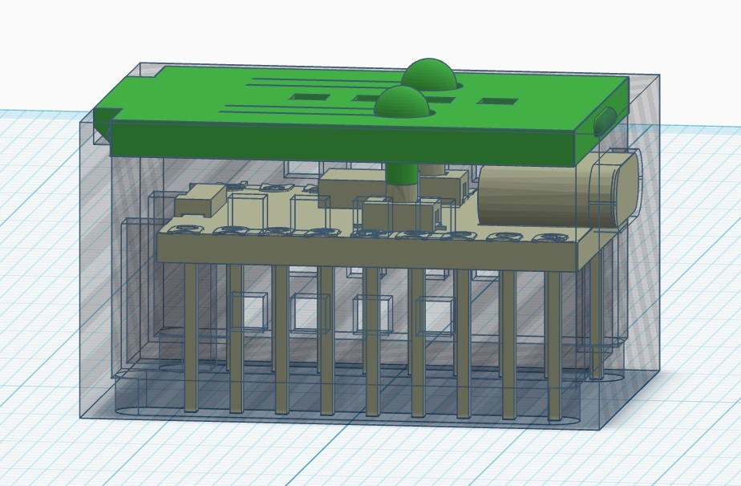
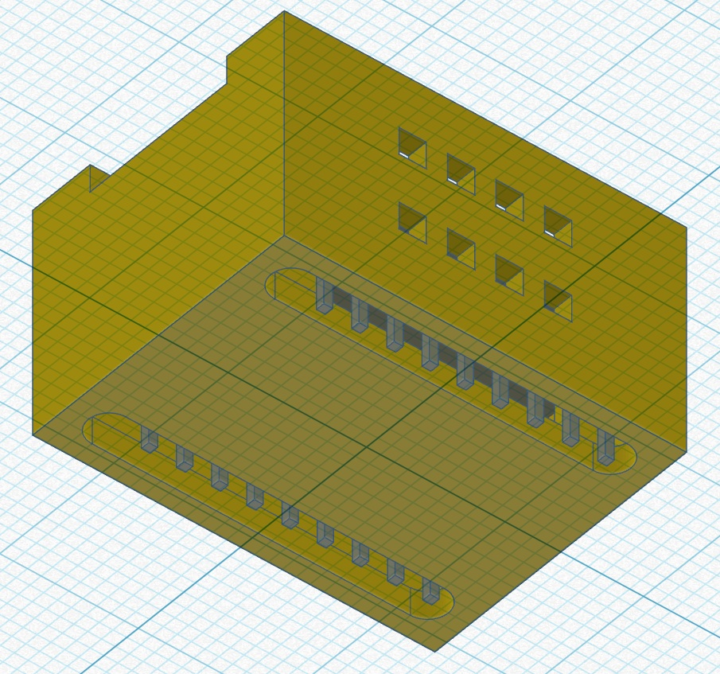
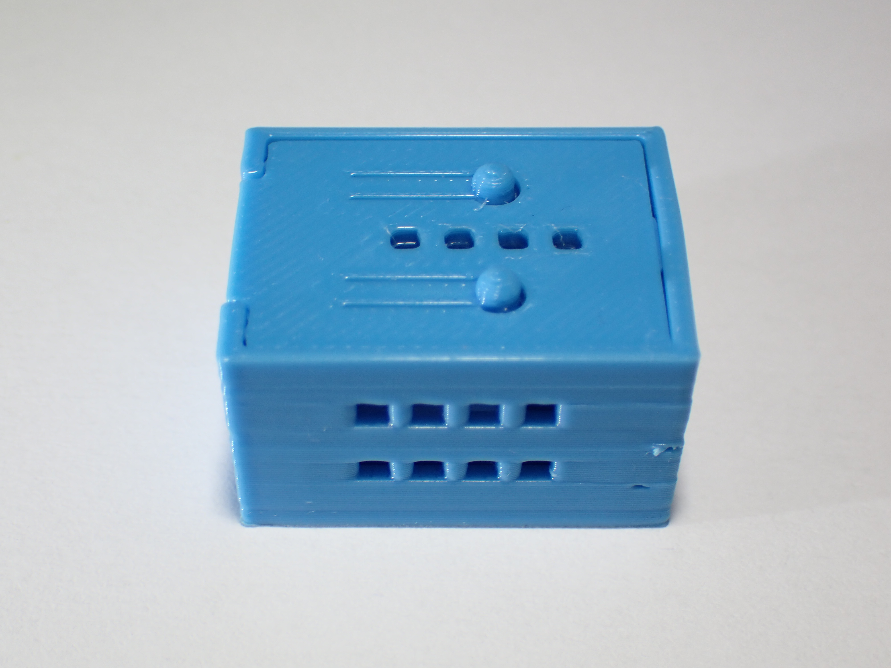
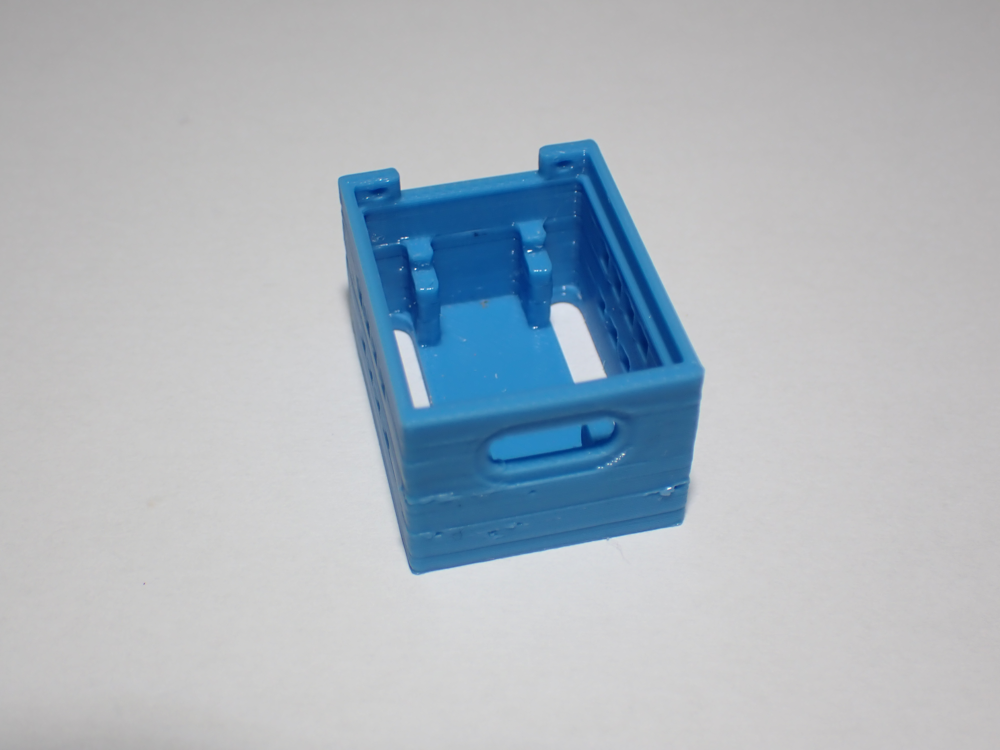
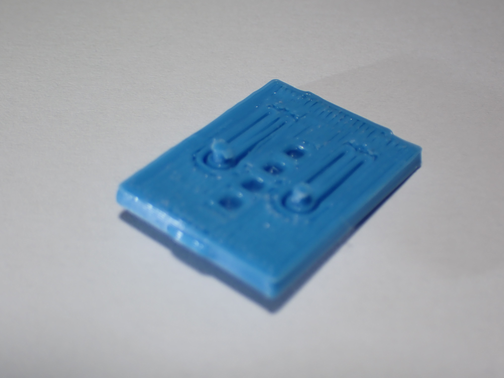
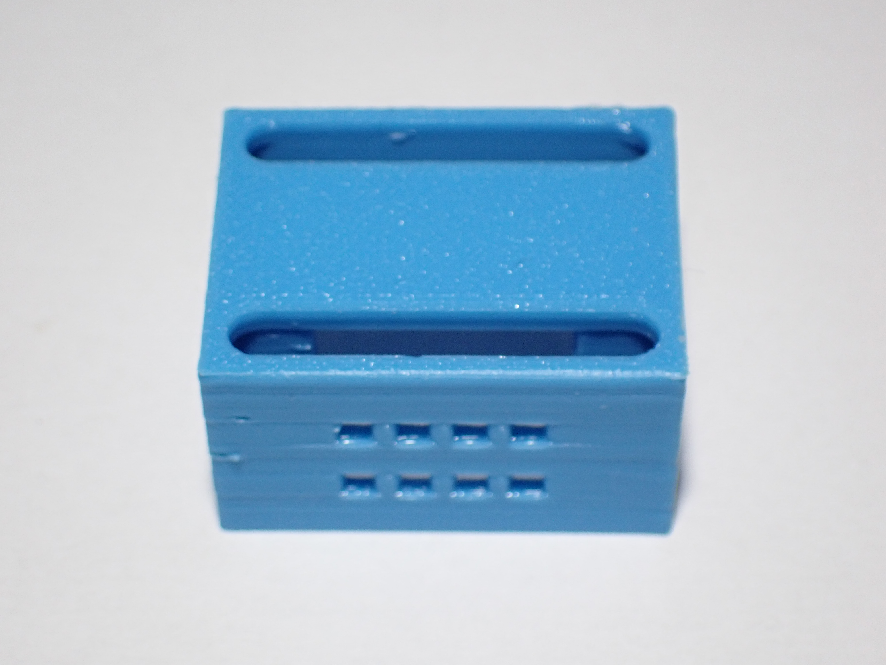

Prototype 2
Second iteration of the case: tolerance corrections, improved locking mechanism, and new print verifications with the BambuLab A1.
Description
The second prototype was developed to address all four critical issues identified during Prototype 1 testing. The model was redesigned in Tinkercad, maintaining the same two-part structure (base + lid) while correcting geometric tolerances throughout. The revised version was printed in PLA using a BambuLab A1 printer.
The focus of this iteration was on fitment accuracy: the internal board supports were widened to allow smooth insertion, the base floor was thickened to protect the protruding GPIO pins, the lid recess was reduced to eliminate wall deformation, and the flexible button pins were shortened to restore correct button travel.
Advantages (Pros)
- Widened internal support rails to allow board to slide in without force.
- Increased floor thickness to cover and protect pins from impact.
- Reduced lid recess depth to improve fit without wall stress.
- Shortened flexible button pins to restore correct play and travel.
3D Design and Photos








Issues Encountered
- The board pins still sat very close to the bottom of the case, with almost no clearance from the contact surface.
- The pin slots were not perfectly centred, so the board was not held squarely in place.
- Ventilation was adequate but could still be improved: more holes, better centred, would increase airflow.
- The lowest row of ventilation holes sat slightly too high, close to the edge of the board.
- The lid still seated a little tight, leaving one side wall slightly deformed after closing.
Conclusions
The second prototype confirmed that the board now inserts easily and that the USB-C port, GPIO pins and flexible buttons all work correctly. The points still to refine concern pin clearance and centring, the ventilation layout, and a slightly tight lid. These are addressed in the final design: the slots are centred, the floor is raised so the pins sit about 0.1 mm off the contact surface, the vents are increased and centred (with the lowest holes lowered about 1 mm so they stay below the board), and the lid tolerance is optimised so it seats cleanly without deforming the walls.